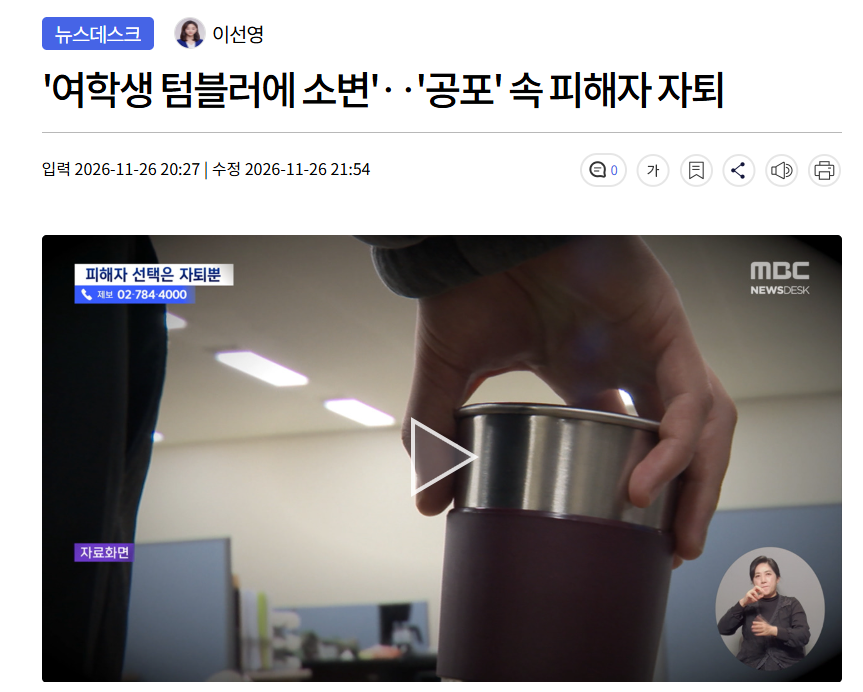

지난 9월, 김해의 한 고등학교.
학생들이 자리를 비운 사이 한 남학생이 같은 반 여학생의 텀블러에 소변을 봤습니다.
이 사실을 모른 채 텀블러의 소변을 마신 여학생은 그날 밤 복통과 구토 증세로 응급실까지 실려 갔습니다.
소변이었다는 사실을 알고 외상후스트레스장애로 치료가 필요하다는 진단까지 받았습니다.
https://imnews.imbc.com/replay/2026/nwdesk/article/6868903_37004.html
애미...
좀 병신들좀 신상공개좀 바로바로해라